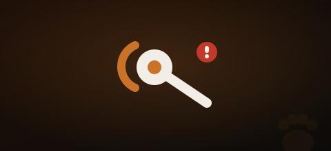

El Rottweiler es una de las razas con mayor predisposición a la displasia de cadera y codo. Se trata de una malformación en la articulación donde el hueso no encaja correctamente, generando desgaste, dolor e inflamación progresivos. Conocerla bien es la mejor herramienta para detectarla a tiempo y actuar.
💡 La displasia no tiene cura, pero con el tratamiento adecuado un Rottweiler con displasia puede tener una vida larga, activa y con buena calidad. El diagnóstico temprano lo es todo.
¿Qué es la displasia y por qué afecta tanto al Rottweiler?
La displasia es una malformación genética y degenerativa de la articulación. En la displasia de cadera, la cabeza del fémur no encaja correctamente en el acetábulo (cavidad de la pelvis). En la displasia de codo, son los huesos del codo los que no se desarrollan de forma simétrica.
El Rottweiler es especialmente vulnerable por varios factores: su gran tamaño y peso (40-60 kg) somete las articulaciones a una carga enorme, su base genética tiene alta prevalencia de la enfermedad, y su rápido crecimiento en los primeros meses puede agravar el problema si no se gestiona bien.

Síntomas que debes vigilar
La displasia puede aparecer desde los 5-6 meses, aunque muchos casos no se detectan hasta la edad adulta. Estos son los síntomas más frecuentes:
- Dificultad para levantarse tras el descanso, especialmente por las mañanas
- Cojera intermitente o continua, especialmente en las patas traseras
- Marcha balanceante o "culebreo" en la parte posterior
- Intolerancia al ejercicio — se cansa antes de lo habitual o no quiere salir
- Rechaza subir escaleras o saltar al sofá
- Cambio de humor — más irritable, apático o reticente al contacto en la zona afectada
- Musculatura de los cuartos traseros poco desarrollada — el perro descarga peso hacia adelante
⚠️ Si tu Rottweiler muestra cualquiera de estos síntomas de forma persistente, acude al veterinario. Solo una radiografía puede confirmar el diagnóstico y determinar el grado de afectación.
Grados de displasia
Leve
Síntomas mínimos. Cambios degenerativos apenas perceptibles.
Moderado
Subluxación de la cabeza femoral. Dolor ocasional.
Grave
Alteraciones degenerativas importantes. Gran parte del fémur fuera del acetábulo.
Muy grave
Luxación completa. Cambios degenerativos severos. Dolor crónico.
Tratamientos disponibles
🩺 Tratamiento conservador
- Antiinflamatorios y analgésicos
- Condroprotectores (glucosamina, condroitina)
- Control de peso — fundamental
- Fisioterapia y rehabilitación
- Natación — ejercicio sin impacto
- Restricción de ejercicio intenso
🔪 Tratamiento quirúrgico
- Triple osteotomía pélvica (cachorros jóvenes)
- Resección de la cabeza femoral
- Prótesis total de cadera
- Artroscopia (displasia de codo)
- Coste estimado: 2.000 – 4.000 € por cadera
- Resultados muy buenos en grados II-III
💡 El tratamiento lo decide siempre el veterinario según el grado, la edad del perro y su calidad de vida. Una displasia bien gestionada no impide que tu Rottweiler alcance una buena esperanza de vida. No existe una respuesta única — lo que funciona para uno puede no ser lo mejor para otro.
Cómo prevenir la displasia desde cachorro
Control de la alimentación
Alimentación específica para razas grandes en crecimiento, con calcio y fósforo equilibrados. Evitar sobrealimentación — el crecimiento debe ser lento y constante, no acelerado.
Ejercicio controlado en cachorros
Máximo 5 minutos por mes de vida, dos veces al día. Sin saltos, sin escaleras frecuentes, sin impactos. Las articulaciones de un cachorro Rottweiler no están completamente formadas hasta los 18-24 meses.
Control del peso durante toda la vida
El exceso de peso es uno de los factores que más acelera el deterioro articular. Un Rottweiler en su peso ideal protege sus articulaciones — deberías poder palpar sus costillas sin verlas.
Radiografías de control preventivas
Se recomienda una radiografía de cribado entre los 12 y 18 meses. Detectar la displasia antes de que cause síntomas permite actuar antes y con mejores resultados.
Adoptar con garantías sanitarias
Si adoptas de protectora, pide el historial veterinario completo. Los progenitores de un Rottweiler deben tener radiografías de displasia con resultado libre (A o B según la escala FCI) antes de reproducirse.
Vivir con un Rottweiler con displasia
Un Rottweiler diagnosticado con displasia puede tener una vida plena con los cuidados adecuados. Las claves son: mantener un peso ideal, hacer ejercicio moderado y de bajo impacto (especialmente natación), fisioterapia regular y seguimiento veterinario constante.
Muchos dueños de Rottweiler con displasia describen que sus perros son igual de felices y activos que antes del diagnóstico — simplemente con una rutina adaptada a sus necesidades.
Preguntas frecuentes
¿Tiene cura la displasia en perros?
No tiene cura definitiva, pero con tratamiento adecuado — médico o quirúrgico — el perro puede tener una calidad de vida excelente. El objetivo es controlar el dolor y frenar el deterioro articular.
¿Cuánto cuesta operar la displasia en un Rottweiler?
Dependiendo de la técnica y la clínica, la cirugía puede costar entre 2.000 y 4.000 euros por cadera. Por eso muchos especialistas recomiendan contratar un seguro veterinario para razas predispuestas.
¿A qué edad se detecta la displasia en un Rottweiler?
Los primeros síntomas pueden aparecer entre los 5 y 18 meses, aunque muchos casos se detectan en la edad adulta. Las radiografías de control son la única forma de confirmar el diagnóstico.
¿Puede hacer ejercicio un Rottweiler con displasia?
Sí, pero adaptado. La natación es ideal — ejercita toda la musculatura sin impactar las articulaciones. Se debe evitar correr en superficies duras, saltar y los cambios bruscos de dirección.